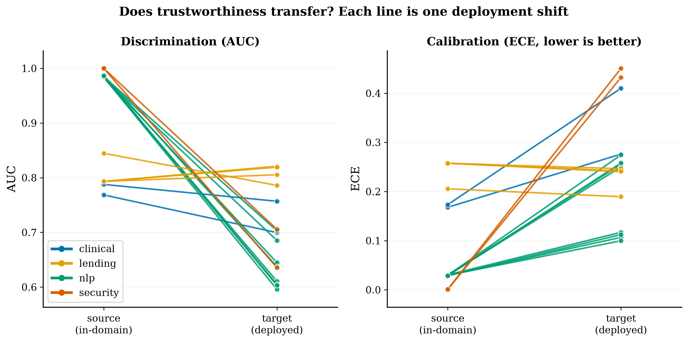
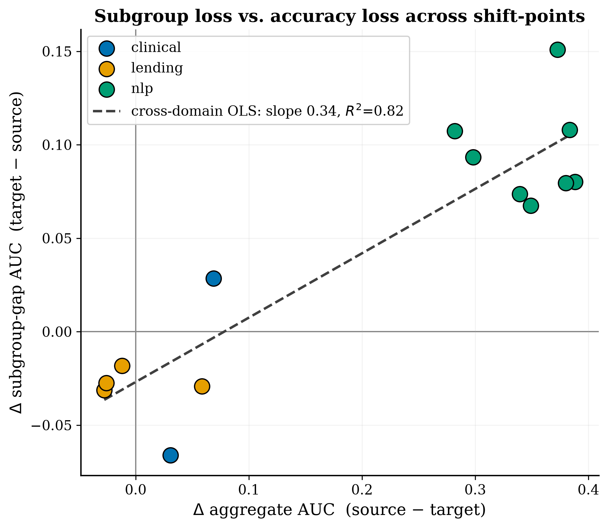
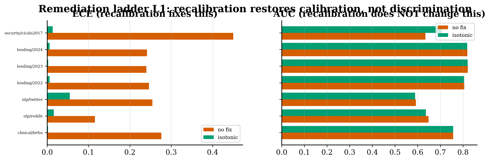

One pre-registered audit across four dissimilar domains: the type of distribution shift — not its magnitude — determines which axis of trustworthiness fails at deployment.
The kind of change in the world — not the amount of change — decides what breaks.
A machine-learning model is trained on yesterday's data and then released into a world that keeps changing. Everyone knows performance can drop — but not all drops are alike. Sometimes the model still ranks people correctly but its probability estimates become dishonest; sometimes it fails one demographic group; sometimes it collapses entirely. This paper studies four completely different fields at once — medicine, social-media language, mortgage lending, and network attacks — under one identical audit, and finds that the kind of change in the world, not the amount of change, decides what breaks. Better still, the kind is detectable in advance, from unlabeled data, so the right repair can be chosen before anyone is harmed.
ML systems are audited domain by domain, and deployment failures are usually attributed to how large the distribution shift is. Whether the kind of shift predicts the kind of failure had not been tested across domains under one protocol.
A single pre-registered audit protocol applied to four real-world domains — clinical risk (NHANES→BRFSS), mental-health NLP (Kaggle→Reddit/Twitter), mortgage lending (42M HMDA applications), and network security (CIC-DDoS2019→CICIDS2017). Discrimination, calibration, and subgroup reliability are measured with DeLong and bootstrap confidence intervals (N = 2000) and Benjamini–Hochberg FDR control, then explained by three cheap, label-free shift probes: prevalence shift, domain-classifier AUC, and importance-reweighting residual.
Shift type, not shift magnitude, predicts which trustworthiness axis degrades — and the responsible shift type is diagnosable in advance from unlabeled data, mapping each diagnosis to the appropriate remediation: recalibration, reweighting, or retraining. The full pipeline re-runs from a fresh clone to byte-identical result tables.



It converts post-hoc deployment surprises into a pre-deployment diagnostic: an auditor can anticipate the failure axis before labels arrive. And it binds the program's clinical, NLP, lending, and security evidence into one reproducible benchmark — the thesis that holds the rest of this research together.